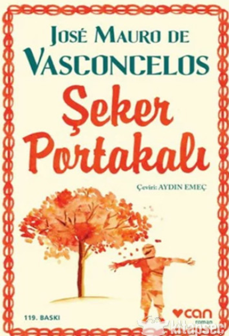

|
|
KitapYolu.com |
|  |
Şeker Portakalı“Ne güzel bir şeker portakalı fidanıymış bu! Hem bak, dikeni de yok. Pek de kişilik sahibiymiş,
Brezilya edebiyatının klasiklerinden Şeker Portakalı, José Mauro de Vasconcelos’un başyapıtı kabul edilir.
Stefan Zweig
Dil Türkçe
Load More
Kağıt Cinsi 2. Hamur Cilt Tipi Ciltsiz Basım Yeri TÜRKİYE Sayfa Sayısı 208 Yayın Tarihi Haziran-2020 Baskı Sayısı 20. Baskı Ölçü 13,5x21 |